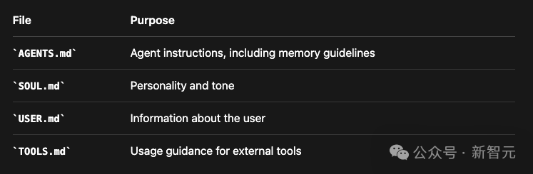
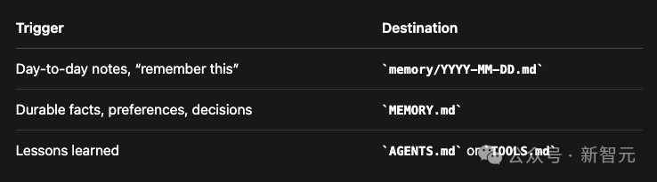
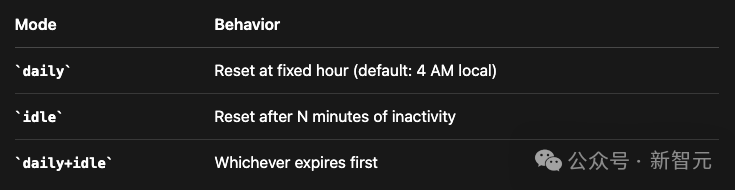

关于 Clawdbot 的记忆管理系统，AI研究工程师 Manthan Gupta 写了一篇文章详细复盘了Clawdbot独特的记忆机制原理。
「它不搞那种基于云端、由大公司控制的记忆，而是把所有东西都留在本地，让用户完全掌控自己的上下文和技能。」
所有的记忆，都是用 MD 文档进行存档管理的。
文章转载自「新智元」的编译版本。
⬆️关注 Founder Park，最及时最干货的创业分享
超 19000 人的「AI 产品市集」社群！不错过每一款有价值的 AI 应用。
最新、最值得关注的 AI 新品资讯；
不定期赠送热门新品的邀请码、会员码；
最精准的 AI 产品曝光渠道
01
Clawdbot 里如何定义上下文与记忆？
1.1 如何构建上下文？
[] 系统提示词 (System Prompt) (静态+条件指令) [] 项目上下文 (引导文件: AGENTS.md, SOUL.md 等) [] 对话历史 (消息, 工具调用, 压缩摘要) [] 当前消息
系统提示词定义了AI智能体有多大能耐以及有什么工具可用。
跟记忆有关的是项目上下文，这包括了注入到每个请求中的、用户可编辑的Markdown文件：

这些文件跟记忆文件一块待在AI智能体的工作区里，这就让整个AI智能体的配置变得完全透明，而且你想改就改。
上下文是模型在单次请求里看到的所有东西：
上下文 = 系统提示词 + 对话历史 + 工具结果 + 附件上下文是：
转瞬即逝的：只在这个请求里存在，用完即弃
有边界的：受限于模型的上下文窗口 (比如200 Token)
昂贵的 ：每个Token都要算API的钱，还影响速度
记忆是存在硬盘里的东西：
记忆= MEMORY.md + memory/*.md + 会话实录记忆是：
持久的：重启、过几天、过几个月都在
无边界的：可以无限增长
便宜的 ：存着不花 API 的钱
可搜索的：建了索引，支持语义检索
1.3 记忆工具
AI智能体通过两个专门的工具来查阅记忆：
1. memory_search
目的：在所有文件里把相关的记忆找出来：
{ "name": "memory_search", "description": "强制回忆步骤：在回答关于以前的工作、决定、日期、人员、偏好或待办事项的问题之前，先对MEMORY.md + memory/*.md进行语义搜索", "parameters": { "query": "关于API咱们定的什么？", "maxResults": 6, "minScore": 0.35 }}返回：{ "results": [ { "path": "memory/2026-01-20.md", "startLine": 45, "endLine": 52, "score": 0.87, "snippet": "## API讨论\n为了简单起见，决定用REST而不是GraphQL...", "source": "memory" } ], "provider": "openai", "model": "text-embedding-3-small"}
2. memory_get
目的：找到内容后，把具体内容读出来
{ "name": "memory_get", "description": "在 memory_search 之后，读取记忆文件里的特定行", "parameters": { "path": "memory/2026-01-20.md", "from": 45, "lines": 15 }}
返回：
{ "path": "memory/2026-01-20.md", "text": "## API讨论\n\n跟团队开了个会讨论API架构。\n\n### 决定\n我们选了REST没选GraphQL，理由是：\n1. 实现起来简单\n2. 缓存更好做\n3. 团队更熟这个\n\n### 端点\n- GET /users\n- POST /auth/login\n- GET /projects/:id"}
1.4 写入记忆
这里没有专门的memory_write工具。AI智能体想写记忆，就用它平时写文件、改文件的那些标准工具。
既然记忆就是纯Markdown，你也可以手动去改这些文件（它们会被自动重新索引，很智能）。
具体写到哪，是由AGENTS.md里的提示词来控制的：

自动写入也会在「预压缩刷新」和会话结束时发生。
1.5 记忆存储
Clawdbot记忆系统的核心原则就是：「记忆就是AI智能体工作区里的纯Markdown文件。」
02
Clawdbot 记忆系统如何运作的？
2.1 双层记忆系统
记忆就住在AI智能体的工作区里（默认是~/clawd/）：
~/clawd/├── MEMORY.md - 第2层: 长期精选知识└── memory/ ├── 2026-01-26.md - 第1层: 今天的笔记 ├── 2026-01-25.md - 昨天的笔记 ├── 2026-01-24.md - ...以此类推 └── ...
第1层：每日日志（memory/YYYY-MM-DD.md）
这些是「只增不减」的每日笔记，AI智能体一整天都会往这里写东西。
当它想记住点什么，或者你明确告诉它「把这个记下来」的时候，它就写这。
# 2026-01-26## 10:30 AM - API讨论跟用户讨论了REST vs GraphQL。决定：为了简单用REST。关键端点：/users, /auth, /projects。## 2:15 PM - 部署把v2.3.0发到生产环境了。没毛病。## 4:00 PM - 用户偏好用户提了一嘴，他们更喜欢TypeScript而不是JavaScript。
第2层：长期记忆（MEMORY.md）
这是精选过的、持久的知识库。
当有大事发生、或者有了重要的想法、决定、观点和经验教训时，AI智能体会写到这里。
# 长期记忆## 用户偏好- 相比JavaScript更喜欢TypeScript- 喜欢简洁的解释- 正在搞 "Acme Dashboard" 项目## 重要决定- 2026-01-15: 数据库选了PostgreSQL- 2026-01-20: 采用了REST而不是GraphQL- 2026-01-26: 用Tailwind CSS写样式## 关键联系人- Alice (alice@acme.com) - 设计主管- Bob (bob@acme.com) - 后端工程师
2.2 AI智能体如何知道要读记忆
AGENTS.md文件（会自动加载）里写着指令：
## 每次会话在干别的事之前：1. 读SOUL.md - 这是「你是谁」2. 读USER.md - 这是「你在帮谁」3. 读memory/YYYY-MM-DD.md（今天和昨天的）以此获取最近的上下文4. 如果是在主会话（MAIN SESSION）（直接跟人类聊天），还要读MEMORY.md别问许可，直接干就完了。
2.3 记忆如何被索引
当你保存一个记忆文件时，后台是这么运作的：
┌─────────────────────────────────────────────────────────────┐│ 1. 文件保存 ││ ~/clawd/memory/2026-01-26.md │└─────────────────────────────────────────────────────────────┘ │ ▼┌─────────────────────────────────────────────────────────────┐│ 2. 文件监听器检测到更改 ││ Chokidar监控MEMORY.md + memory/**/*.md ││ 防抖1.5秒以批处理快速写入 │└─────────────────────────────────────────────────────────────┘ │ ▼┌─────────────────────────────────────────────────────────────┐│ 3. 分块（Chunking） ││ 分割成约400 Token的块，重叠80 Token ││ ││ ┌────────────────┐ ││ │ 块1 │ ││ │ 行1-15 │──────┐ ││ └────────────────┘ │ ││ ┌────────────────┐ │（80 Token重叠） ││ │ 块2 │◄─────┘ ││ │ 行12-28 │──────┐ ││ └────────────────┘ │ ││ ┌────────────────┐ │ ││ │ 块3 │◄─────┘ ││ │ 行25-40 │ ││ └────────────────┘ ││ ││ 为什么是400/80? 平衡语义连贯性与粒度。 ││ 重叠确保跨越块边界的事实能在两个块中都被捕获。 ││ 两个值都是可配置的。 │└─────────────────────────────────────────────────────────────┘ │ ▼┌─────────────────────────────────────────────────────────────┐│ 4. 嵌入（Embedding） ││ 每个块 -> 嵌入提供商 -> 向量 ││ ││ "讨论了REST vs GraphQL" -> ││ OpenAI/Gemini/Local -> ││ [0.12, -0.34, 0.56, ...] (1536维) │└─────────────────────────────────────────────────────────────┘ │ ▼┌─────────────────────────────────────────────────────────────┐│ 5. 存储 ││ ~/.clawdbot/memory/<agentId>.sqlite ││ ││ 表: ││ - chunks (id, path, start_line, end_line, text, hash) ││ - chunks_vec (id, embedding) -> sqlite-vec ││ - chunks_fts (text) -> FTS5全文搜索 ││ - embedding_cache (hash, vector) -> 避免重复嵌入 │└─────────────────────────────────────────────────────────────┘
sqlite-vec是个SQLite扩展，能直接在SQLite里搞向量相似度搜索，不需要外挂一个向量数据库。
FTS5是SQLite自带的全文搜索引擎，负责BM25关键字匹配。
这两者配合起来，Clawdbot就能靠一个轻量级的数据库文件同时搞定「语义+关键字」的混合搜索。
2.4 记忆如何被搜索
当你搜记忆的时候，Clawdbot会并行跑两种搜索策略。
向量搜索（语义）找的是意思相近的内容，而BM25搜索（关键字）找的是有精确Token匹配的内容。
结果会按权重打分合并：
finalScore = (0.7 * vectorScore) + (0.3 * textScore)
为何是70/30？
语义相似度是记忆召回的主力，但BM25关键字匹配能抓住向量可能会漏掉的精确术语（比如名字、ID、日期）。
分数低于minScore阈值（默认0.35）的结果会被过滤掉。这些值都可以自己配，它可以保证你无论是搜概念（比如「那个数据库的东西」）还是搜具体细节（比如「POSTGRES_URL」），都能够搜得准。
2.5 多智能体记忆
Clawdbot支持多个AI智能体，而且每个智能体的记忆是完全隔离的：
~/.clawdbot/memory/ # 状态目录 (索引)├── main.sqlite # "main"智能体的向量索引└── work.sqlite # "work"智能体的向量索引~/clawd/ # "main"智能体工作区 (源文件)├── MEMORY.md└── memory/ └── 2026-01-26.md~/clawd-work/ # "work"智能体工作区 (源文件)├── MEMORY.md└── memory/ └── 2026-01-26.md
Markdown文件（真相的源头）在每个工作区里，而SQLite索引（衍生数据）在状态目录里。
每个AI智能体都有自己的地盘和索引。
内存管理器是靠agentId + workspaceDir来区分的，所以自动跨智能体搜记忆这事是不会发生的。
那AI智能体能读对方的记忆吗？
默认不行。
每个AI智能体只能盯着自己的工作区。
不过，工作区只是个软沙箱（默认工作目录），不是那种不可逾越的硬边界。
理论上，除非你开了严格的沙箱模式，否则AI智能体是可以用绝对路径去访问另一个工作区的。
这种隔离对于区分上下文特别好用。
比如搞个用于WhatsApp的「私人」 AI智能体，再搞个用于Slack的「工作」AI智能体，它俩就能有完全不同的记忆和性格。
03
Clawdbot 如何管住上下文？
3.1 压缩
每个AI模型都有上下文窗口的上限。
Claude是200K Token，GPT-5.1是1M。
聊得久了，总会撞上这堵墙。
一旦撞墙，Clawdbot就会使出「压缩」大法：把旧的对话总结成一个精简的条目，同时保留最近的消息原封不动。
┌─────────────────────────────────────────────────────────────┐│ 压缩前 ││ 上下文: 180,000 / 200,000 Tokens ││ ││ [第1轮] 用户: "咱们搞个API吧" ││ [第2轮] 智能体: "好嘞! 你需要什么端点?" ││ [第3轮] 用户: "用户和认证" ││ [第4轮] 智能体: *写了500行Schema* ││ [第5轮] 用户: "加上速率限制" ││ [第6轮] 智能体: *改代码* ││ ... (还有100轮) ... ││ [第150轮] 用户: "现在什么状态了?" ││ ││ ⚠️ 接近上限 │└─────────────────────────────────────────────────────────────┘ │ ▼┌─────────────────────────────────────────────────────────────┐│ 触发压缩 ││ ││ 1. 把第1-140轮总结成一个精简摘要 ││ 2. 第141-150轮保持原样 (最近的上下文) ││ 3. 把摘要持久化保存到JSONL实录里 │└─────────────────────────────────────────────────────────────┘ │ ▼┌─────────────────────────────────────────────────────────────┐│ 压缩后 ││ 上下文: 45,000 / 200,000 Tokens ││ ││ [摘要] "构建了带/users, /auth端点的REST API。 ││ 实现了JWT认证, 速率限制（100请求/分）, ││ PostgreSQL数据库。已部署到预发布环境v2.4.0。 ││ 当前重点: 准备生产环境部署。" ││ ││ [第141-150轮保持原样] ││ │└─────────────────────────────────────────────────────────────┘
3.2 自动vs手动压缩
自动：快到上下文长度限制时触发
你会看到详细模式下自动压缩已完成
原始请求将使用压缩后的上下文重试
手动：使用/compact命令
`/compact`专注于决策和待解决的问题
跟某些优化不一样，压缩后的东西是会存到硬盘里的。摘要会被写进会话的JSONL转录文件，所以以后的会话开始时，都能带着这段被压缩的历史。
3.3 记忆刷新
基于LLM的压缩是有损的。重要信息可能会被「总结没了」。
为了防止这个，Clawdbot用了一招「压缩前记忆刷新」。
┌─────────────────────────────────────────────────────────────┐│ 上下文接近上限 ││ ││ ████████████████████████████░░░░░░░░ 75%的上下文 ││ ↑ ││ 越过软阈值 ││ (contextWindow - reserve - softThreshold)│└─────────────────────────────────────────────────────────────┘ │ ▼┌─────────────────────────────────────────────────────────────┐│ 静默记忆刷新轮次 ││ ││ 系统: "压缩前记忆刷新。现在存储持久记忆 ││ (使用memory/YYYY-MM-DD.md)。 ││ 如果没什么可存的，回复NO_REPLY。" ││ ││ 智能体: 审查对话里的重要信息 ││ 把关键决定/事实写进记忆文件 ││ -> NO_REPLY（用户什么也看不见） │└─────────────────────────────────────────────────────────────┘ │ ▼┌─────────────────────────────────────────────────────────────┐│ 压缩安全进行 ││ ││ 重要信息现在已经在硬盘上了 ││ 压缩可以继续，知识不会丢 │└─────────────────────────────────────────────────────────────┘
这个记忆刷新可以在clawdbot.yaml或clawdbot.json文件里配置。
{ "agents": { "defaults": { "compaction": { "reserveTokensFloor": 20000, "memoryFlush": { "enabled": true, "softThresholdTokens": 4000, "systemPrompt": "Session nearing compaction. Store durable memories now.", "prompt": "Write lasting notes to memory/YYYY-MM-DD.md; reply NO_REPLY if nothing to store." } } } }}
3.3 剪枝
工具返回的结果有时候巨大无比。一个exec命令可能吐出50,000个字符的日志。
剪枝就是把这些旧的输出给修剪掉，但不重写历史。这是个有损过程，剪掉的旧输出就找不回来了。
┌─────────────────────────────────────────────────────────────┐│ 剪枝前 (内存中) ││ ││ 工具结果 (exec): [50,000字符的npm install输出] ││ 工具结果 (read): [巨型配置文件, 10,000字符] ││ 工具结果 (exec): [构建日志, 30,000字符] ││ 用户: "构建成功了吗?" │└─────────────────────────────────────────────────────────────┘ │ ▼ (软修剪 + 硬清除)┌─────────────────────────────────────────────────────────────┐│ 剪枝后 (发送给模型) ││ ││ 工具结果 (exec): "npm WARN deprecated...[截断] ││ ...Successfully installed." ││ 工具结果 (read): "[Old tool result content cleared]" ││ 工具结果 (exec): [保留 - 太近了没剪] ││ 用户: "构建成功了吗?" │└─────────────────────────────────────────────────────────────┘
硬盘上的JSONL文件：没变（完整的输出还在那）。
3.4 Cache-TTL剪枝
Anthropic会把提示词前缀缓存最多5分钟，以此来降低重复调用的延迟和成本。
如果你在TTL（生存时间）窗口内发送相同的提示词前缀，缓存的Token费用能省大概90%。
要是TTL过期了，下个请求就得重新缓存整个提示词。
问题来了：如果会话闲置时间超过了TTL，下个请求就没缓存了，必须按全价「缓存写入」费率重新缓存整个对话历史。
Cache-TTL剪枝就是为了解决这个问题，它会检测缓存什么时候过期，并在下个请求之前把旧的工具结果剪掉。
重新缓存的提示词变小了，成本自然就低了：
{ "agent": { "contextPruning": { "mode": "cache-ttl", "//": "只在缓存过期后才剪", "ttl": "600", "//": "配合你的 cacheControlTtl", "keepLastAssistants": 3, "//": "保护最近的工具结果", "softTrim": { "maxChars": 4000, "headChars": 1500, "tailChars": 1500 }, "hardClear": { "enabled": true, "placeholder": "[Old tool result content cleared]" } } }}
3.5 会话生命周期
会话不会永远持续。它们会根据可配置的规则进行重置，给记忆创造了天然的边界。
默认行为是每天重置。不过也有其他模式可选。

3.6 会话记忆钩子
当你运行/new开一个新会话时，会话记忆钩子能自动保存上下文。
/new │ ▼┌─────────────────────────────────────────────────────────────┐│ 触发会话记忆钩子 ││ ││ 1. 提取刚结束会话的最后15条消息 ││ 2. 用LLM生成个描述性的Slug（标识符） ││ 3. 保存到~/clawd/memory/2026-01-26-api-design.md │└─────────────────────────────────────────────────────────────┘ │ ▼┌─────────────────────────────────────────────────────────────┐│ 新会话开始 ││ ││ 以前的上下文现在可以通过memory_search搜到了 │└─────────────────────────────────────────────────────────────┘
04
总结
Clawdbot的记忆系统之所以能成，是因为它坚持了这么几个关键原则：
透明度 > 黑盒
记忆就是纯Markdown。你能读、能改，还能用版本控制管它。没有什么不透明的数据库或者专有格式。
搜索 > 注入
AI智能体不是把所有东西一股脑塞进上下文，而是去搜相关的。这样既保持了上下文的专注，又省钱。
持久性 > 会话
重要信息以文件的形式存在硬盘上，而不仅仅是活在对话历史里。压缩也毁不掉已经存盘的东西。
混合 > 纯粹
光靠向量搜索会漏掉精确匹配。光靠关键字搜索会漏掉语义。混合搜索让你鱼和熊掌兼得。
Clawdbot开发者：未来一大批应用都会消失，提示词就是新的interface
BAI、高瓴领投，ThetaWave李文轩：我们想成为下一代年轻人默认的知识获取入口
转载原创文章请添加微信：founderparker